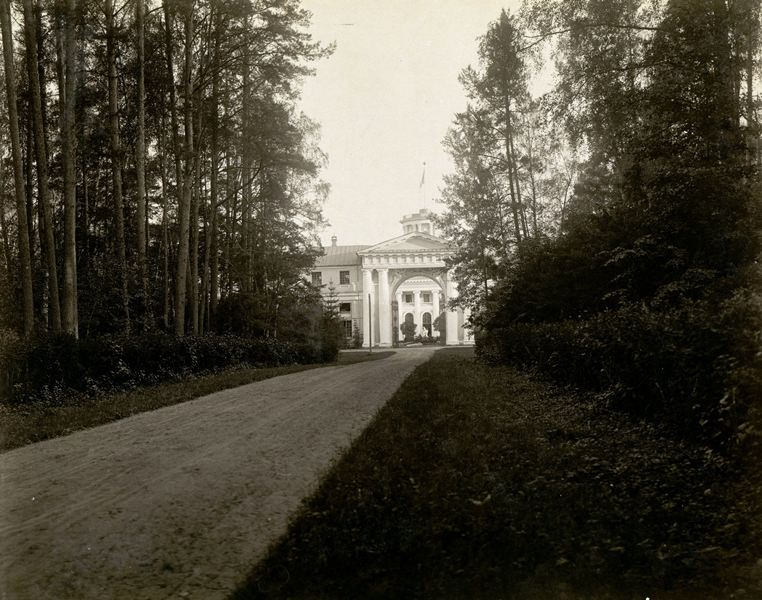

|  | Министерство культуры Российской Федерации Портал Культура.рф Проект «Образы России» |
Le musée-propriété Arkhangelskoye
L’allée des Empereurs. La porte d’entrée. La cour principale

L’allée des Empereurs (les années 1790, 1816) trassée du trajet de Moscou à travers le bosquet de paysage de Bykov vers le centre du domaine a été partiellement conservée (sur la partie de l’autoroute contemporaine Ilinskyi). La flèche droite de l’allée dresse l’axe principal du nord-sud qui régie l’aménagement de la Cour principale, du Palais, des terrasses avec des murs et du parc régulier.
Le chemin sur l’allée mène vers l’Arc Principale– la porte d’entrée dans l’ensemble de palais (archit. S.P.Melnikov, 1817) qui a la vue de l’Arc de triomphe avec les colonnes, les images pittoresques des génies volatiles de la gloire et un grand fronton. Le dessin treillissé des volets en fonte (archit. N.V.Soultanov, 1896) se base sur le style Empire. A travers de l’arc on voit un grand portail en pierre blanche du palais.
La cour principale est entourée des colonnades traversant en pierre blanche (1815-1816), qui servent de galeries de passage entre le Palais et deux pavillons (l’archit. Français Gerne, S.P. Melnikov, V.Ia.Strijakov, les années 1780-90, 1815; reconstruite en 1934) qui sont liées, à leur tour, par l’Arc principale. Le pavillon d’est était au début la cuisine, dans celui d’ouest se trouvaient le théâtre de maison et la bibliothèque. Les angles arrondies des pavillons, des murs coulissants et un parterre rond centrent l’espace architecturale, en répétant la trajection des virages des carrosses.
Dans la 1e moitié du XIXe s. au centre du parterre en été on mettait un bigaradier haut, les plus petits bigaradiers répétaient des colonnes accouplées des côtés de la cour. La peinture des murs coulissants imitait le milieu de bois autour de l’ensemble de palais.